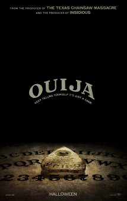

The Judge
141 minutes
Metascore 47/100 (37 reviews)
Big city lawyer Hank Palmer returns to his childhood home where his father, the town's judge, is suspected of murder. Hank sets out to discover the truth and, along the way, reconnects with his estranged family.
Director: David Dobkin
Starring: Robert Downey Jr., Robert Duvall, Vera Farmiga, Billy Bob Thornton
THE BUZZ: It's refreshing to see a movie of this caliber, a courtroom drama that recalls certain hits from the 1980s and 90s hits, more concerned with serving a broad audience than critics or potential Academy voters. Right down to the trailer's overt music cues, David Dobkin, his cast, and Warner Bros. are grandstanding for the public's atten- tion, and I imagine they'll be rewarded with a strong hold at the box office over the first several weeks. It's defi- nitely a change-up for Dobkin, who breaks from his series of increasingly undistinguished but popular comedies for something with a touch more gravitas. There's also plenty of cursin' spat back and forth between Robert Duvall and Robert Downey Jr., so much so that an R rating was slapped on faster than Vera Farmiga's tattoo.

ouija
134 minutes
Metascore 63/100 (4 reviews)
A group of friends must confront their most terrifying fears when they awaken the dark powers of an ancient spirit board.
Director: Stiles White
Starring: Olivia Cooke, Ana Coto, Daren Kagasoff, Bianca A. Santos
THE BUZZ: Supernatural horror movies will pattern themselves after Insidious and The Conjuring until audiences grow weary of the formula, so that's why Ouija's trailer focuses more on the spirit world than it does on the spirit board. It's also why the movie seems to have no sense of humor about itself, which makes us long for a new Ti West film ... Stiles White and Juliet Snowden co-wrote The Possession and they re-team here with White directing as well, so the duo knows this genre, and with no direct competition through Halloween, these particular spirits should linger for a couple weeks.